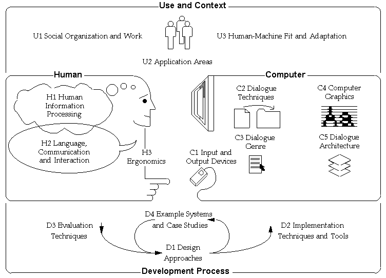

Click to see a larger diagram:

Components:
Some components and ideas of the multifaceted area of HCI came from science, engineering and design with a mixture of methodology principles, such as: “...psychology, anthropology, sociology, and industrial design... ("Human-Computer”);” it is indeed a fascinating and mystic composition of study. During the course of history, the ways of teaching HCI has rapidly changed, and the knowledge we gained about the way of HCI has changed swiftly as well (McKay 21).